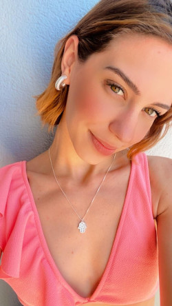

Olha que perfeição essa menina é, esses olhos verdes, essa boca, esse cabelo, TUDO EM VOCÊ é maravilhoso.
Vamos para outra foto sua so para vermos um pequeno detalhe

Quando me perguntam o que é uma foto linda eu mostro essa, esse sorriso é com certeza uma das sete maravilhas do mundo. E detalhe, tenho esse sorriso para mim todo dia, quando você me pergunta porque faço gracinhas todos os dias, é por conta disso. Ver voce rindo, com toda certeza desse mundo é o meu momento preferido.
Para finalizar essa primeira parte do site, vou colocar uma foto em que voce estava muito feliz, a inauguração da sua lojinha de pratas, a acessorios vibes.
Eu amo essa foto por um motivo, você estava muito feliz! Postando fotos desse brinco e desse cordão para postar na sua lojinha, que graças a Deus vendeu tudo, mas infelizmente você deu uma desanimada. Você me disse que esta empenhada a voltar e voce sabe que tem meu apoio total, o mundo é nosso meu amor!!!
Desta vez cou colocar apenas duas fotos e falar um pouco de voce.


Essas duas fotos eu tambem sou apaixonado, mas o intuito dessa parte do site é falar do jeito. Então, o que eu mais gosto em você disparado é o tamanho do seu coração, pois você sempre faz de tudo para ajudar as pessoas ao seu redor. Sempre que estou triste você faz de tudo para me ver feliz novamente, sempre faz as coisas que eu gosto, e sempre esta afim de fazer algo novo.